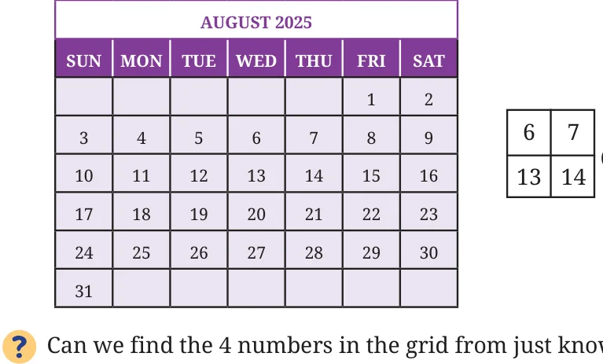
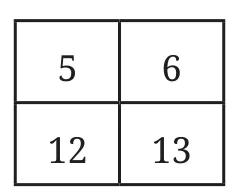
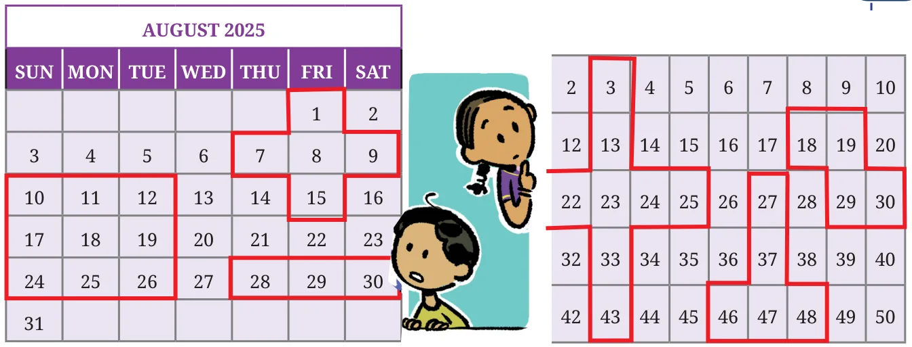

Calendar Magic
A page from a calendar is given below. Your friend picks a \(2 \times 2\) grid from this calendar, adds the 4 numbers in this grid and tells you the sum.

\(6 + 7 + 13 + 14 = 40\)
Can we find the 4 numbers in the grid from just knowing this sum?
Let us use algebra. Consider a \(2 \times 2\) grid. Let \(a\) represent the top left number. What are the other numbers in terms of \(a\)?
Adding all four numbers, the sum is \(a + (a + 1) + (a + 7) + (a + 8) = 4a + 16\). Suppose you are told that the sum is 36. Can you find the 4 numbers in the grid?
- \(4a + 16 = 36\)
- \(4a = 20\) (subtracting 16 from both sides)
- \(a = 5\) (dividing both sides by 4)
Now that we have found \(a\), we know that the other three numbers are \(a + 1\), \(a + 7\) and \(a + 8\). Therefore, the grid must be the following:

Create your own calendar trick. For instance, choose a grid of a different size and shape.
